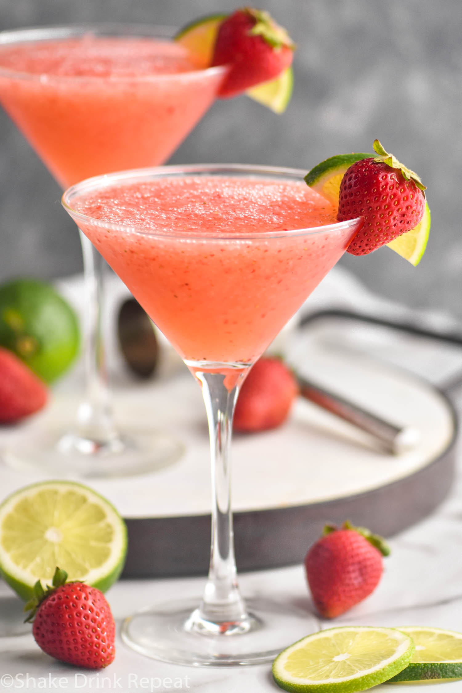

Strawberry Daiquiri

Description
This recipe found here, makes delicious sweet and refreshing Strawberry Daiquiri cocktails.
For more cocktail recipes visit the Recipes Index
Ingredients
This recipe makes 8 Strawberry Daiquiri cocktails.
- Strawberries: 4 ounces of frozen strawberries
- Sugar: 1/2 cup of white sugar.
- Lemon Juice: 1/2 cup lemon juice.
- Lime Juice: 1/8 cup lime juice.
- Rum: 3/4 cup rum.
- Carbonated Beverage: 1/4 cup of lemon-lime flavored carbonated beverage.
- Ice: 6 cups or as needed.
Steps
You'll need a blender for this recipe.
- Place strawberries, sugar, lemon, and lime juice into the blender.
- Add in rum, your carbonated beverage, and your ice.
- Blend.
- Serve and Enjoy!